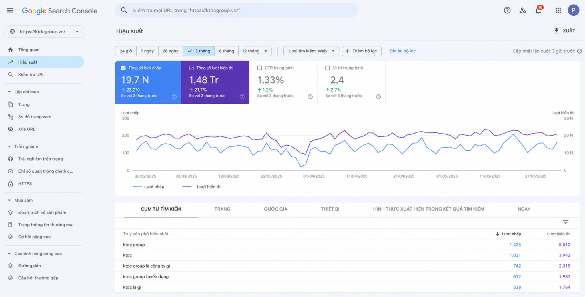
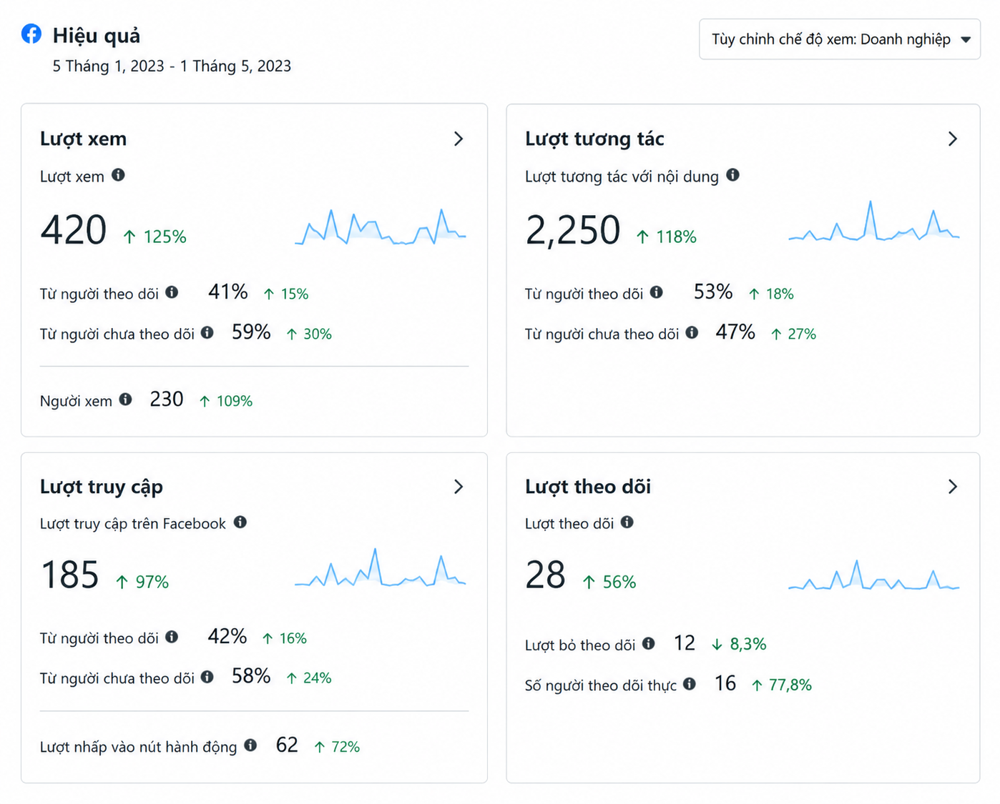
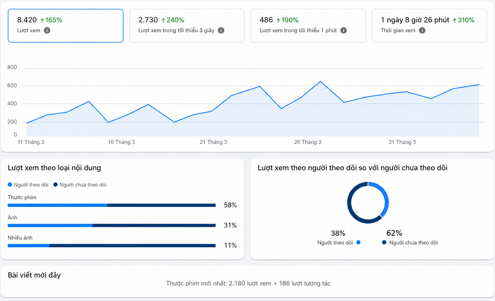
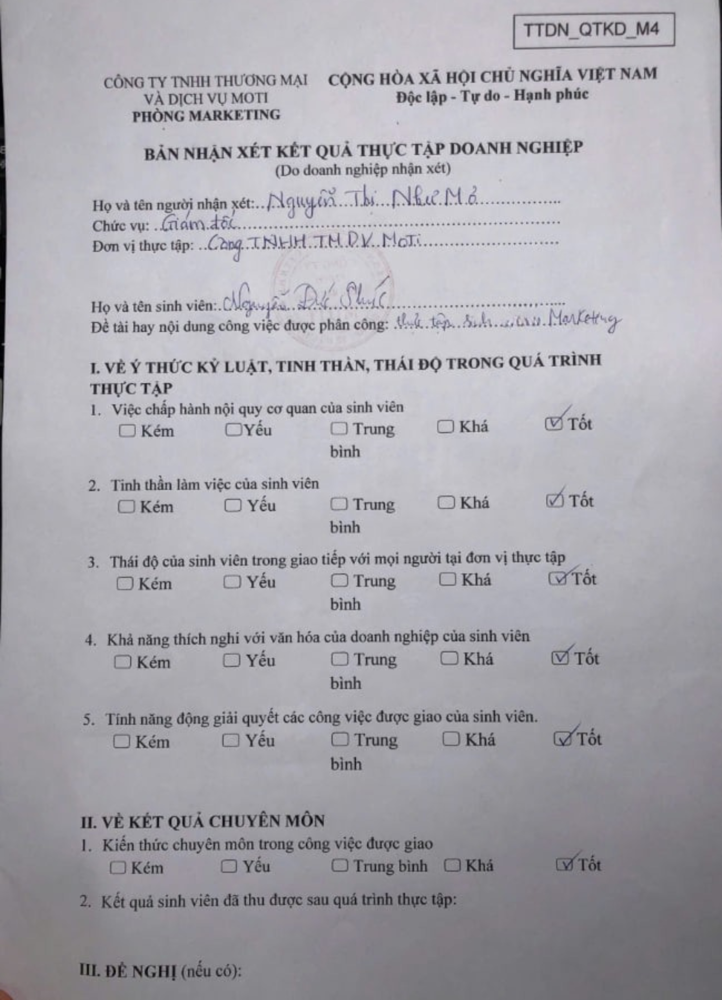
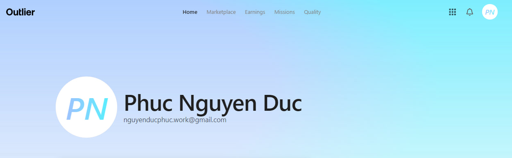

0K
Lượt truy cập organic/tháng
Sẵn sàng cho cơ hội Digital Marketing
Tôi kết hợp SEO, AI Search, nội dung và phân tích dữ liệu để tạo ra tăng trưởng có thể đo lường — không chỉ là những con số đẹp trên báo cáo.
0K
Lượt truy cập organic/tháng
0K
Từ khóa có thứ hạng
0%
Tăng lượt click CTA
0B
VND doanh thu năm được hỗ trợ
01 — EXPERTISE
Từ khám phá nhu cầu đến đo lường hiệu quả, tôi kết nối chiến lược với thực thi trong một hệ thống nhất quán.
Keyword research, content optimization, technical SEO fundamentals, AEO/GEO, schema markup và chiến lược pillar–cluster.
Lập kế hoạch, theo dõi ngân sách và tối ưu chiến dịch dựa trên ROAS, CPA cùng các chỉ số chuyển đổi.
Xây dựng thông điệp, kế hoạch nội dung và creative phù hợp hành trình khách hàng trên website lẫn mạng xã hội.
Biến dữ liệu thành insight rõ ràng qua báo cáo, phân tích funnel, theo dõi KPI và đề xuất hành động tiếp theo.
02 — SELECTED WORK
Hai lát cắt thể hiện cách tôi xử lý bài toán tăng trưởng: một bên là khả năng hiển thị trên tìm kiếm, một bên là hiệu quả chuyển đổi.

Nghiên cứu chủ đề, tối ưu cấu trúc nội dung và mở rộng độ phủ từ khóa theo hành trình tìm kiếm của người học.

Kết nối insight, creative và dữ liệu hành vi để cải thiện hiệu quả CTA, đồng thời hỗ trợ mục tiêu doanh thu.

Lập kế hoạch, thiết kế và triển khai nội dung hình ảnh lẫn video ngắn, bám sát nhận diện thương hiệu.

Thực hành nghiên cứu thị trường, tìm kiếm khách hàng và tiếp cận quy trình báo giá, kỹ thuật website.
* Số liệu tổng hợp từ các dự án trong portfolio; phạm vi đóng góp được mô tả rõ trong từng case study.
PROJECT EVIDENCE
03 — PROCESS
Một nhịp làm việc gọn, lặp lại được và luôn quay về mục tiêu kinh doanh.
Hiểu mục tiêu, khách hàng, thị trường và điểm nghẽn hiện tại.
Đọc dữ liệu, đối thủ, từ khóa và hành trình chuyển đổi.
Ưu tiên cơ hội, đặt KPI và chọn kênh phù hợp.
Triển khai nội dung, SEO, quảng cáo và creative.
Theo dõi hiệu suất và tìm tín hiệu tạo ra khác biệt.
A/B testing, điều chỉnh và mở rộng phần hoạt động tốt.
04 — ABOUT
PHUC
NGUYEN
MARKETER × BUILDER
Tôi là Nguyễn Đức Phúc, tốt nghiệp ngành Marketing và theo đuổi Digital Marketing theo hướng data-driven. Điểm mạnh của tôi nằm ở giao điểm giữa sáng tạo, phân tích và khả năng hiểu cách sản phẩm số vận hành.
Nền tảng full-stack giúp tôi phối hợp tốt hơn với đội ngũ kỹ thuật, nhìn SEO vượt ra ngoài nội dung và biến ý tưởng marketing thành trải nghiệm số có thể triển khai.

ADDITIONAL EXPERIENCEAI Training Contributor · Outlier ↗05 — CREDENTIALS
Chứng chỉ chuyên môn tập trung vào SEO, AI Search, quảng cáo và Digital Marketing.
06 — THE FIT
Bắt đầu từ mục tiêu kinh doanh, không chạy theo công cụ hay xu hướng chỉ vì chúng mới.
Chủ động đào sâu lĩnh vực mới và chuyển kiến thức thành đầu việc có thể kiểm chứng.
Trình bày insight rõ ràng, liên kết chỉ số với quyết định và bước hành động tiếp theo.
DIGITAL MARKETING PORTFOLIO — 2026
{kind=link}